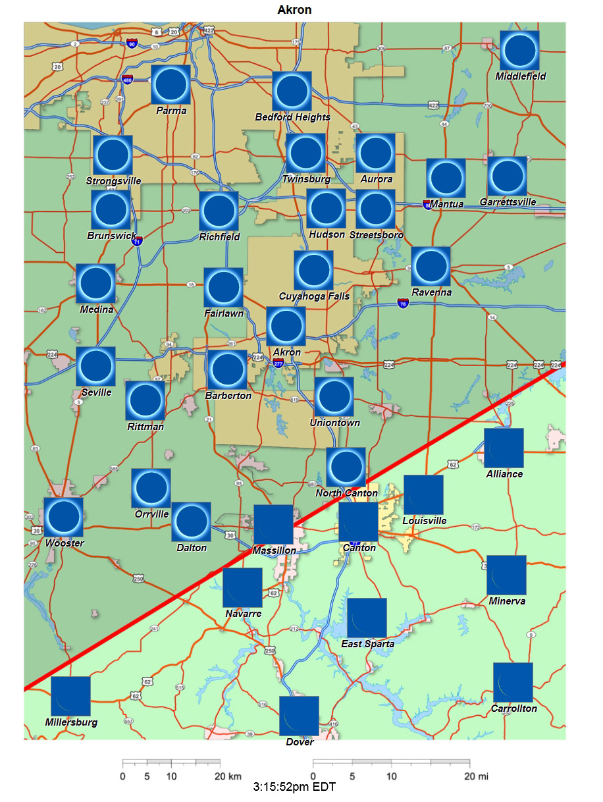

Akron-Canton, Ohio, USA
What will the 2024 total solar eclipse look like?
(Please note that Eclipse2024.org does not endorse or approve any specific viewing sites related to the 2024 eclipse. Selection of a suitable viewing site, including due diligence, weather considerations, infrastructure, travel, logistics, understanding of time zones, avoidance of trespassing on private lands, and safety considerations, is solely the responsibility of the eclipse observer.)
You MUST use certified eye protection (“eclipse glasses”) whenever ANY PART of the Sun’s disk is visible.
In Canton, you must ALWAYS use your eclipse glasses to view the eclipse.

The Total Eclipse of April 8, 2024
Another total solar eclipse is coming to the United States! This time, totality will also pass over Mexico and Canada – giving people all over North America another chance to experience this great celestial event.
In order to see totality, you have to be in the path of totality. If you aren’t in that path, you’ll only see a partial eclipse. You can learn more about those details with our simple eclipse viewing instructions guide.
This blog post will tell you about the 2024 eclipse as seen from the Akron-Canton area in Ohio. Please check out all the links we’ve provided below to learn more about the 2024 eclipse from other locations.

The Total Eclipse of April 8, 2024 in Akron-Canton
The Akron-Canton area is truly a tale of two cities on eclipse day. Akron lies solidly in the path, and will see about 2m45s of totality – whereas most of Canton lies outside the southern limit of the path. This means that it is extremely important for you to know where to be on eclipse day, if you want to see the amazing sight of totality!
Where can I see the total eclipse?
In Akron, you’re fine. You can stay put and enjoy the eclipse all you want. If you want to get more totality, you can head up I-80 to Cleveland to get an extra minute in the shadow. Please see our blog post about Cleveland to get more information on locations near there.
However, if you’re south of town, totality falls off rapidly. The airport will see 1m44s of totality, but just a bit south on I-77, Stark State College only gets about a minute. Massillon is right on the southern limit, so if you’re there you really need to be as far north as you can get.
What will I see on eclipse day?

In Canton itself, it’s very difficult to describe exactly what you’ll see on eclipse day, because each part of town will see something different. Most of town is not in the path. You have to be in North Canton, and certainly at least a mile north of the Hall of Fame, to see totality. It’s true that from locations not in the path there will be sky darkening, some possibly interesting edge effects, and maybe even a bit of corona.

However, if the Sun is not COMPLETELY eclipsed you MUST always use eye protection to watch the eclipse. That means that, even if these things are going on around you, if you’re not in the path you won’t be able to see most of them. It will be best for you to get as far north and west as possible, to make sure you’re in the path and will be able to see totality.
When will the eclipse happen?
Eclipse day is April 8, 2024!
Whatever the eclipse brings to Canton, it will be most interesting as the shadow passes by – to the north and west of town, remember.
This will happen at about 3:15pm EDT.
The eclipse happens at different times in dfifferent locations. Use the slider on the map above to show you when totality will happen as the eclipse passes through the Akron-Canton area.
The eclipse happens at different times in different locations. Use the slider on the map above to show you when totality will happen as the eclipse passes through the Akron-Canton area.
Again, it’ll be best if you try to get at least as far as Akron to make sure you have a great view of the eclipse.
Use ISO-certified eye protection during the partial phases
Always remember the rule for using eye protection during an eclipse: If there’s ANY bright part of the Sun showing, then you have to use the eclipse glasses to watch the event.

That means if you can see anything at all of the Sun through the glasses, then the Sun is too bright and you have to leave the glasses on! If you can see absolutely NO piece of the Sun through the eclipse glasses, then it’s safe to take them off. But the second any bright part of the Sun becomes visible again, you have to put them back on – and this can be mere seconds after you took them off. It would be so much better for you to get into the path, and really enjoy seeing totality!
Check out the eclipse2024.org Eclipse Simulator!
Wherever you decide to view from, be sure to plan your route carefully, and watch the weather to make sure you’ll have good skies on eclipse day. And please be sure to check out Eclipse2024.org’s eclipse simulator for any location you’d like to preview. The simulator will show you exactly what the eclipse will look like for any location you choose!